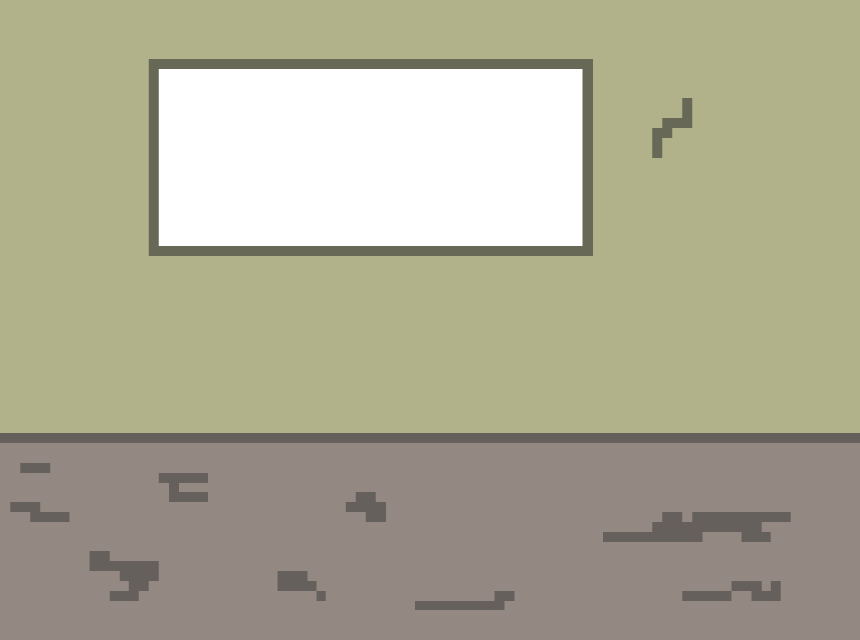

- Nightshade, Serial Inmate and Prison Expert
Want to know more about Prop 36? Click on any of the links below to learn more about the Three Strikes Law and how this could impact that law.
Related Links

Scroll around the screen to discover information about Prop 36.
